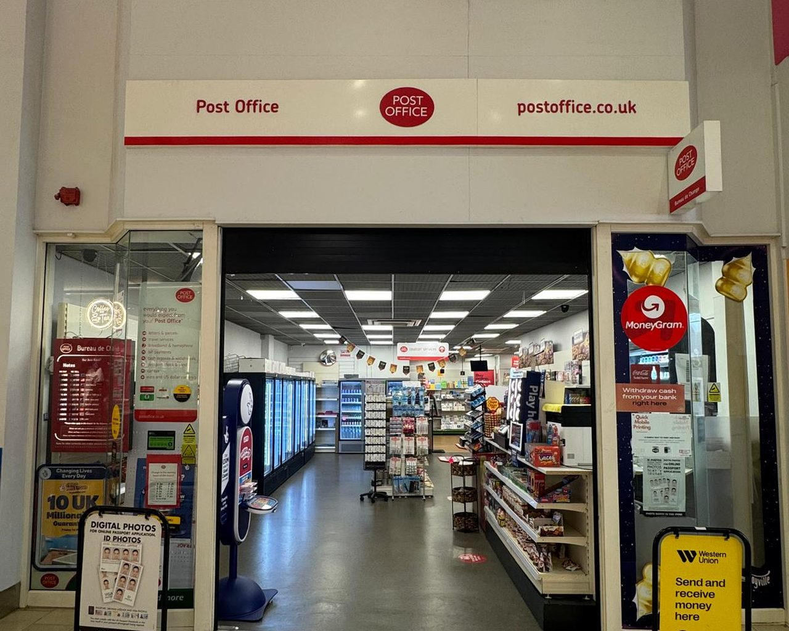
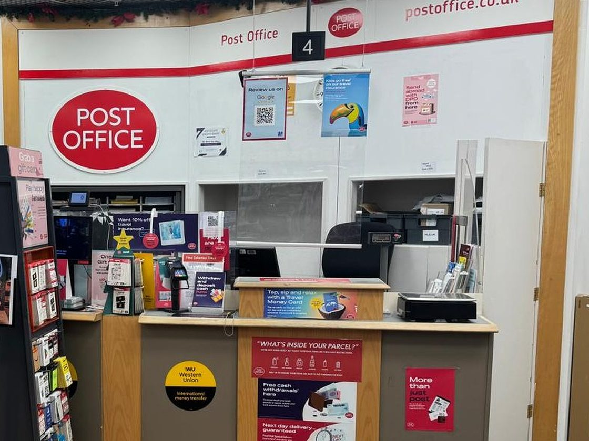

Post & parcels
Royal Mail UK services, Royal Mail international services, Parcelforce Worldwide, Drop & Go and 2 more.
See post and parcels →Passports, parcels, everyday banking, travel money and DVLA services in the middle of Leicester — open half past nine to half past five, six days a week, including full Saturdays.

Every service below is confirmed on this branch's official Post Office listing.
Royal Mail UK services, Royal Mail international services, Parcelforce Worldwide, Drop & Go and 2 more.
See post and parcels →Cash withdrawals, Cash deposits, Cheque deposits.
See everyday banking →Bill payments and top-ups.
See bills and payments →Paper Check & Send — new and renewals, Digital Check & Send — new and renewals.
See passport applications →Document certification, In-branch verification.
See identity services →DVLA photocard renewal, Vehicle tax.
See driving and licensing →SIA licence application.
See licence applications →Foreign currency, Travel insurance, Travel Money Card.
See travel →Western Union, MoneyGram, Savings application forms, Savings account ID verification.
See money transfer and savings →Most of what we handle involves documents, deadlines or money. Those are worth doing in front of a person.
Passport applications get reviewed for the errors that cause rejections — photos, dates, missing countersignatures.
Drop & Go lets online sellers and small businesses leave a batch and go, rather than queue item by item.
Tax the car, pay a bill, post a return and pick up euros without moving the car twice.

Most Post Office branches shut at one o'clock on a Saturday. We do not. That makes this branch useful to anyone who works weekdays and cannot get to a counter before it closes.
Being in the middle of town also means you can fold it into a trip you were making anyway — post a return, tax the car and pick up euros between other errands.
We serve customers from Leicester city centre, Highcross, Clarendon Park, Stoneygate, Knighton, Belgrave, Evington, Aylestone, Braunstone, Oadby and Wigston.
More about the branchIf your job needs a particular service or specific documents, ring ahead and we will tell you exactly what to bring.
Important information. This website is operated by The Shires Post Office, an independently operated Post Office branch. It is not the official website of Post Office Limited, and it is not operated by or on behalf of Post Office Limited. “Post Office” and the Post Office logo are registered trade marks of Post Office Limited. Services, fees, eligibility criteria and opening hours are set by Post Office Limited and its partners and may change without notice. Product information on this site is provided as a general guide only and does not constitute financial, legal or travel advice. Before travelling to the branch for a specific service, please check the official Post Office branch listing or telephone us on 029 2005 5048 to confirm availability.